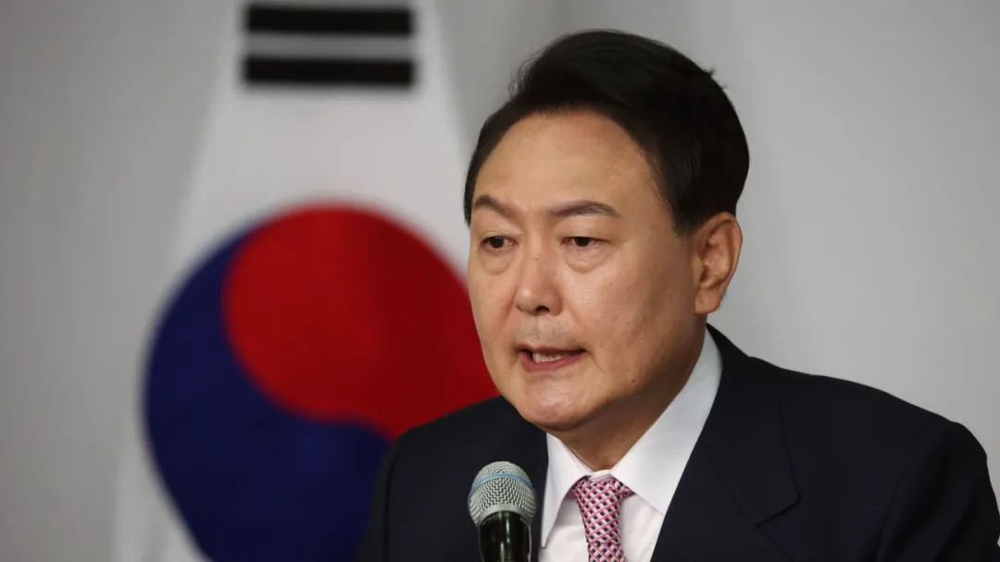
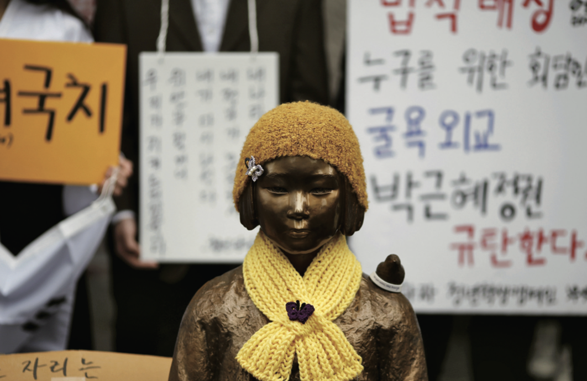
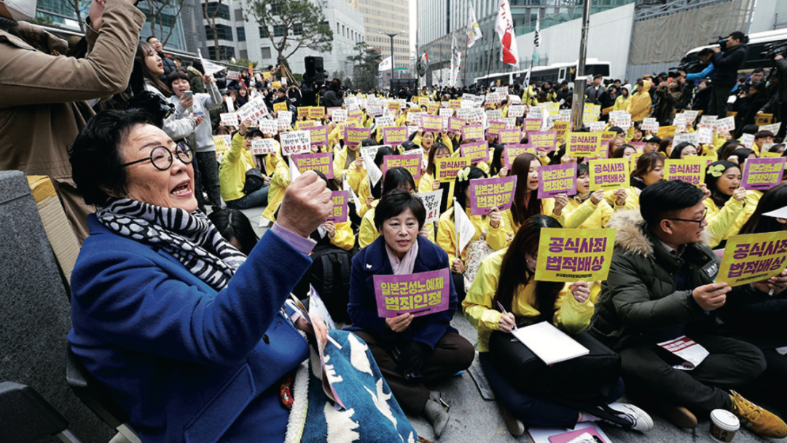
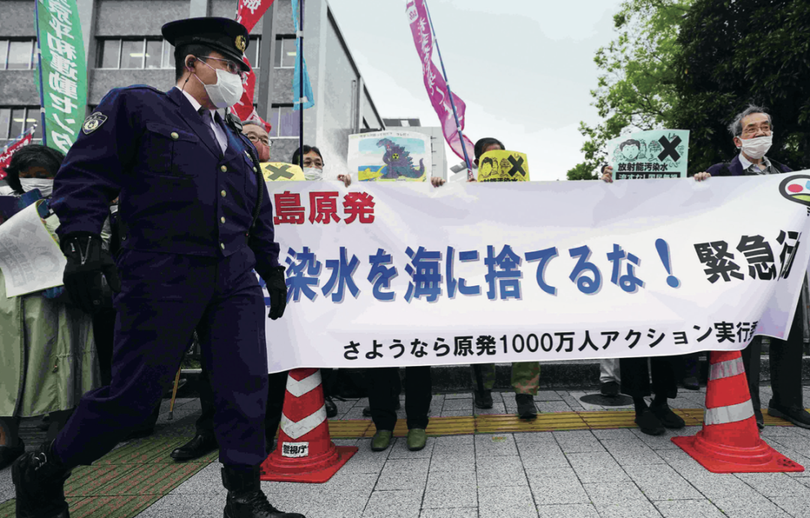

收录于合集
以下文章来源于文化纵横 ，作者杨延龙、张蕴岭
 文化纵横 .
文化纵横 .
倡导文化重建，共同思想未来，发掘不一样的深度阅读。

导 读
据韩日媒体报道， 近日韩国新当选总统尹锡悦高调宣布将强化与美国的盟友关系，并与日本首相岸田文雄通话，就改善韩日关系等问题达成共识，双方认为今后需要齐心协力的未来课题有很多， 要合理地解决两国悬而未决问题，以符合共同利益。 本文指出，随着韩国社会议题和党派、党内竞争中的撕裂日益严重，民众越来越出现极端化、激进化的趋势（这一点在此次大选选票上就有体现）。 社会问题推动国内政治发展，形成社会与政治的凝聚，在社会力量的强烈驱动下，政治难以让步。 而韩日之间，因为近代长期的殖民统治，留下了以“慰安妇”、“强征劳工”为代表的历史问题，民众参与社会讨论中，民族悲情主义塑造了民族凝聚力，也促生了对立。 尤其是在当下： 一方面，日韩之间共同发展的利益关系逐渐转向车辆、电子等产业的竞争关系；另一方面，民族主义被定义为爱国主义，两国给予现实的合作利益，已经无法抵消历史问题引发的民族矛盾。 加上互联网传播的影响，韩国民间的反日情绪相对高涨，也不可避免地影响韩国外交政策。 历史上也曾有李明博因为亲日受到质疑，支持率暴跌的案例。 而日本对于历史问题已经形成了“建交时已经解决”的共识，因此对韩国的强硬态度，也不时给予强硬回应。因此， 韩日之间尽管国家关系实现了正常化，存在于社会各层面的问题并没有得到解决，历史遗留问题常成为韩国社会力量和社会运动的引爆点，被激进主义、国家政治作为凝聚社会共识、塑造民族意识、转移社会矛盾的抓手。 在这一问题上，韩国和日本双方都处于两难境地。本文原载《文化纵横》2021年第6期（12月刊），原题《历史伤痕的当代阴影——韩国对日关系的社会政治》，仅代表作者观点，供诸君参考。
历史伤痕的当代阴影
——韩国对日关系的社会政治

图片来源：新西兰联合报
01
** ** ** 越南高层权力格局的新变化与权力结构的特点******
韩国与日本有着复杂的关系。近代日本对朝鲜半岛的长期殖民统治，“二战”后韩国与日本同为美国的盟国，使两国关系中历史恩怨与现实联系并存。 近年，韩日间因历史遗留问题爆发冲突明显增多，强度也明显增大。其中，“慰安妇”问题和日企“强征劳工”问题是冲突的焦点。历史遗留问题与民众诉求、社会运动、民族意识与国家政治、对外政策等因素缠绕在一起，使得两国矛盾不断升级。
本文试图从社会政治的视角来分析韩国对日关系中的深层问题。这里，我们把社会政治定义为由社会因素推动的政治，社会因素主要表现为社会意识、社会利益、社会诉求所引发的社会舆论、社会运动和社会组织，政治则主要表现为政治认知、政治取向和政府政策。
01
** ** ** 历史遗留问题的症结******
日本殖民统治朝鲜半岛35年，历史积怨很深。 “二战”后，朝鲜半岛脱离日本殖民统治，在美国的扶持下大韩民国政府成立。美国为建立冷战防线，竭力促成韩日两国实现关系正常化。1952年，韩国与日本开启邦交正常化谈判，最终经过七轮的艰苦谈判，于1965年签订《韩日基本条约》，实现了关系正常化。
然而，韩国与日本在主要历史遗留问题上存在巨大的认知差异。冷战期间，韩国社会对解决历史问题的诉求长期屈从于服务国家现实利益的外交政策，韩日关系在经济合作的驱动下发展稳定。但是， 随着韩国经济获得长足发展，民众的民族主义意识也极具增强，对解决历史遗留问题的诉求开始浮出水面并逐步形成强大的社会舆论和政治力量。 “慰安妇”问题和日企“强征劳工”问题是两个由社会升级成政治并进而成为两国外交矛盾与冲突的典型案例。
（一）“慰安妇”问题发酵
日军强征“慰安妇”事件发生在第二次世界大战期间。据统计，从1932年到“二战”结束，日本政府和日本军队在亚洲强迫超过20万名女性成为性奴隶。 日本投降后，尽管日军强征“慰安妇”事件在东京审判中被认定为日本侵略罪行之一，但因冷战格局、威权政治、历史认识等因素的影响，并未受到各方充分关注，在对日本战后处理和韩日邦交正常化等谈判中均未成为独立议题。
20世纪80年代中期，随着民主化运动在韩国兴起，大量接受过现代教育的韩国女性开始呼吁女性权利，成为声讨“慰安妇”问题的主力军。1990年11月，韩国民间团体成立“挺身队问题对策协议会”（简称“挺队协”）。在“挺队协”的推动下，1991年8月，韩国“慰安妇”幸存者金学顺老人向东京地方裁判所提起诉讼，实名做证控诉日军侵略罪行，要求日本政府就当年的错误行径道歉并给予补偿。
韩国民间团体就“慰安妇”问题积极展开活动，形成了越来越强的社会舆论，在此情况下，韩国政府开始对“慰安妇”问题介入，制定了《日军慰安妇生活安全法》，对国内的“慰安妇”受害者提供补偿，同时通过外交途径要求日本政府查明真相。在韩国社会舆论和政府的介入下，日本政府发表了有关“慰安妇”问题的“加藤谈话”和“河野谈话”，并成立了“亚洲女性基金”。但是，日本此举并没有得到韩国社会的认同，韩国民间团体对此结果保持强烈抗议姿态，“慰安妇”受害者及其支持团体批评这些道歉和反省不具备真实性，拒绝接收“亚洲妇女基金”提供的赔偿。“慰安妇”问题自此上升为韩国政治重要议题。

“慰安妇”问题在韩国国内政治的升级必然向韩日关系延伸。 2012年8月28日，韩国国会外交通商统一委员会全体会议通过了“敦促日本政府向日军‘慰安妇’正式道歉及赔偿”的决议案。该决议案强调日本政府应承认日军强征“慰安妇”的历史事实并对此负有责任，同时向受害者正式道歉和赔偿。国际社会对“慰安妇”的诉求也表示支持，要求日本政府道歉。2013年，在多方压力下，朴槿惠政府不得不将“慰安妇”问题与两国关系挂钩，并将解决“慰安妇”问题视为改善韩日关系的前提条件。朴槿惠政府为解决“慰安妇”问题，通过高层及首脑会谈直接敦促、通过国际社会间接施压、通过局长级会议展开事务磋商等策略，督促安倍政府纠正历史修正主义的主张。
在针对“慰安妇”问题的磋商过程中，韩日双方在法律责任、个人赔偿、拆除“慰安妇”纪念碑等事项上存在巨大分歧。 2015年12月28日，韩日双方达成《慰安妇问题协议》，尽管该协议的达成或有助于暂时搁置双方争议，但韩国社会对“慰安妇问题协议”并不满意，他们指责该协议缺乏针对受害者的解决内容，可能存在幕后承诺，并对“最终和不可逆转的解决”等措辞表示质疑和批评。2016年底，在协议签署一周年之际，韩国各地民间团体举行大规模集会抗议，主张“慰安妇问题协议”无效，并在日本驻釜山总领事馆前设立“和平少女像”。

2017年5月10日，文在寅当选韩国总统。7月31日，韩国外交部成立工作组，审查了从2014年4月16日召开第一次慰安妇问题司长级会议到2015年12月28日宣布协议的全部流程，并审查了外交部、总统办公室和国家情报局提供的文件和材料，传唤了参与谈判的主要人员。 文在寅政府重新审视“慰安妇问题协议”后，尽管对该协议持有明显的异议，但为减少韩日冲突，仍承认该协议的存续，但搁置了协议的实施与进一步谈判。 2021年1月8日，韩国首尔中央地方法院做出判决，支持韩国“慰安妇”要求日本政府支付精神赔偿的诉讼要求。该判决受到韩国慰安妇支持团队的热烈欢迎，但引起韩日关系新一轮冲突。
（二）“强征劳工”案突起
据韩国政府统计，日本占领朝鲜半岛35年间，共向本国输送了约78万劳工从事采煤、炼钢等重体力劳动。 1965年，韩日建交时签署《请求权协定》，约定由日本向韩国政府支付3亿美元，并提供2亿美元的优惠贷款，韩国同意“二战”韩国劳工向日本企业的索赔问题“完全且最终解决”。1974年，韩国政府对“强制征用”受害者进行了赔偿，但在当时的历史条件下，许多劳工没有拿到足够的补偿，为日后的纠纷埋下了隐患。
20世纪90年代后，韩日两国政界、学界、法律界围绕与“二战”时期“强制动员”和与索赔问题相关的日本殖民统治的合法权问题、1965年《韩日基本协定》第二条的解释、《韩日请求权协定》赔偿对象及《韩日慰安妇问题协议》等问题发生争议， 至今仍未找到妥善解决的方法，成为长期影响韩日关系的阻碍因素。
2012 年，韩国大法院首次做出裁定，认定强征劳工的个人索赔权并未因《请求权协定》而消失。2013年，首尔高等法院首次宣判新日铁住金公司（前新日本制铁）对4名劳工做出赔偿，但朴槿惠政府出于韩日关系的考虑而迟滞了最高法院的终审判决。2018 年10月30日、11月29日，韩国大法院分别就被告日本新日铁住金公司和三菱重工在日本殖民统治朝鲜半岛期间“强征劳工”做出终审判决，维持了2013年首尔、釜山两地高等法院所做原判决结果，勒令被告向每位受害者原告分别赔偿1亿韩元和8000万韩元。此举成为日韩矛盾集中爆发的导火索。由于韩日两国政府无法就劳工索赔问题达成一致，导致更多的日本企业被韩国法院判决赔偿。2019年1月，韩国一家法院批准原告方所提扣押新日铁住金公司在韩部分资产的申请，原告随后着手处置这家企业被扣押的资产，把所获资金用于赔偿。这之后，日本要求与韩国进行外交磋商。韩国总统文在寅称许多韩国人不相信1965年的条约足以赔偿损失，并呼吁尊重法院的裁决。
总体来看，日本在“慰安妇”问题和“强征劳工”问题上的立场一直没有变化，即这些问题都在日韩建交时得到解决。对于韩国国内社会政治不断升级和由此造成的外交问题，日本政府除提出抗议外，还采取一系列强硬的措施。 比如，2017年1月6日，日本叫停了与韩国的货币互换磋商，并推迟了韩日高层经济对话；１月9日，日本撤回驻韩国大使；2019年7月4日，日本政府正式启动针对韩国的半导体材料出口管制，将韩国排除在贸易“白色清单”之外。针对2021年1月韩国首尔中央地方法院关于强征劳工的判决，新上任的首相菅义伟重申，慰安妇问题已经在1965年两国建交时获得最终解决，日本外务省还召见韩国驻日大使对判决表示抗议。这使得处于“冰冷期”的韩日关系雪上加霜。
02
** ** ** 韩国的社会政治凝聚******
外交是内政的延伸，国内社会政治的变化必然投射到对外关系。梳理韩日“慰安妇”问题与日企“强征劳工”问题不难发现， 韩日历史遗留问题的主要症结在社会，社会问题推动国内政治发展，由此形成社会与政治的凝聚。 社会政治具有刚性特点，即 在社会力量的强烈驱动下，政治难以让步。 日本对朝鲜半岛的殖民统治留下了大量的社会问题，在最初韩日建交时基本没有得到解决，为日后历史问题重新浮现埋下伏笔。随着韩国自身的发展，特别是民主化进程的发展，过去被长期压制的社会诉求浮出水面。将社会大众对解决历史问题的诉求列入政府的公共议题，成为韩国政府需要解决的重要课题。 在轰轰烈烈的社会运动进程中，韩国出现了强烈的历史反思潮，民族主义意识上升，社会力量将正确认识历史、解决历史问题推升为社会运动的重要议题。
社会问题被推升至韩国的政治议题，与韩国进步社会力量和左翼政治团体的推动直接有关。韩国的左翼进步力量在历史问题上坚持原则立场，利用历史问题鼓动民族主义情绪，塑造民族意识，在争取民众，特别是青年群体的选票和政治支持方面获益良多，形成了社会与政治间的依赖关系。近些年，随着韩国社会转型进程的不断深入， 韩国政治面临选民政治分裂与政党政治冲突的双重挑战，选民的政治偏好趋于激进，而政治冲突也使得政党矛盾尖锐化。 受此影响，社会分裂的程度不断加大，社会矛盾难以弥合，韩日政府达成的协议也因政党的轮替而被推翻。
韩日两国基于现实的合作利益，已无法抵消历史问题引发的民族矛盾， 因此，两国政府历次达成的历史问题协议并没有真正解决韩国社会的普遍诉求。1965年韩日实现国家关系正常化，但外交关系正常化是在搁置日本对过去殖民朝鲜统治的认识问题的情况下实现的。朴正熙政府与日本签订的《韩日基本条约》中，战争赔偿问题是以“不要求赔偿性质的财产请求权”方式解决的。韩日最终相互妥协签订协议的根本原因是“两国在经济合作和安全保障方面的国家利益上的相互吸引”。朴正熙政府之所以这样做，主要是为了尽快与日本实现关系正常化，获得日本援助，发展本国经济。当时，影响韩日关系的主要因素是基于国家发展利益的政治因素，韩国民众对解决历史遗留问题的诉求，屈从于国家的现实发展利益。随着韩国对日本经济和安全依赖关系弱化和竞争关系增强，弥合韩日国家矛盾与民族矛盾的现实利益合作大为减少，韩国社会对历史问题追责的诉求自然充斥于两国关系中，成为一个重要的影响因素。
冷战期间，在美国构筑的同盟体系当中，韩日在经济和安全领域的合作需求一定程度掩盖了其历史和民族矛盾。冷战结束后，过去由美国强权政治进行安排的国际交往规则发生改变。 韩日关系的维系和发展，最开始是以经济合作和安全合作等为纽带。近些年，韩日经贸关系中的竞争成分不断增多， 特别是在汽车、造船、半导体和通信等领域，竞争日趋激烈。以发展促稳定的环境消失，社会政治矛盾浮出水面。同时，日本的历史认识也激发了韩国的“悲情民族主义”情绪，为社会运动火上浇油，推动韩国社会政治升级。
031
** ** ** 社会政治与外交******
“慰安妇”问题和“强征劳工”案等历史遗留问题，成为推动韩国社会政治发展的重要因素。 历史问题的聚焦在凝聚和培养韩国人的民族性、民族意识等方面起到了滋养的作用。日本方面，在多种因素的作用下，社会多数对历史的认知越来越走向另一个方向，即支持政府关于所有历史问题都已得到解决的立场，反对为过去的行为再进行道歉，对他国提及历史问题非常反感。 因此，这导致韩国的“反日”情绪和日本的“嫌韩”情绪逐步加深，两国社会相互仇视，在社会对立的情况下，韩日两国外交冲突不断升级。
一般而言，外交决策者在处理对外关系时,既要考虑国内，也要考虑国外的因素，在坚持本国基本利益的前提下，对内外进行协调，在必要时进行一定的妥协。对民族主义者而言，民族意识与认知要超越外交政治关系。 由于韩国的社会与政治具有相互支持的特点，政治决策者往往会着重考虑对内塑造民族意识、凝聚社会共识，难以做出妥协。
历史具有主观和客观的双重性质。历史悲情主义一直在塑造民族意识、激发民族精神、凝聚本民族共同身份等方面发挥着重要作用。历史悲情主义是对历史上本民族发生的不幸、悲剧和屈辱的一种伤感的集体记忆。许多国家或多或少会利用历史悲情主义对民众进行教育，以塑造民族心理和激发民族精神。在这种集体情绪中，人们会拘泥于对历史问题的片面的、选择性的记忆，这导致人们对自身的不幸历史和现在的身份过于敏感，因此也极大地影响到反观自身和观察别人的视角，从而构成现实层面诸多问题的症结。 对韩国对外关系而言，历史悲情主义往往助长了任性的道德主义，滋生民族主义，产生极端的受害者情结。 这种状况一旦成为集体共有意识并影响政治取向，就会对国家的对外关系产生重大影响。
韩日历史问题不仅关乎民族意识的塑造，还关乎韩国人的身份构建。构建集体身份认同是社会互动与相互承认的结果，韩国人对历史事实的共同回应，也是构建韩国人身份认同的一个重要途径。 对韩国的民族主义者而言，构建身份认同无疑能凝聚社会共识、产生政治利好。 因而推动韩日之间历史遗留问题成为政治议题，也成为打破威权主义，重构民族集体意识，取得民意支持，打击保守政治力量的重要手段。 在民族主义者常被等同于爱国主义者的情况下，韩国社会弥漫着浓重的民族主义色彩。
韩国保守人士普遍“亲日”的现象，常勾起韩国民众被殖民的历史记忆，刺激着韩国人的民族自尊心。 上世纪90年代，韩国民间团体发起了清查“亲日派”行动。行动持续了近30年时间，在2004年获得法律依据，并成立专门调查机构，通过发布“亲日反民族行为者”名单和没收其财产的方式，极大地打击了国内“亲日派”。这个行动使保守派政治人物“一旦被打上亲日标签，就很难在政治上有起色”。迫使这一群体在对待历史问题时愈发谨慎，避免被贴上“亲日派”的标签。 2012年7月，李明博政府曾与日本开展秘密外交，推进两国签订军事情报协定。事件遭到曝光后，韩国社会出现了强烈的反日情绪， 李明博被本国舆论和在野党指责为“签卖国协定”“暴露亲日本色”“卖国贼”等标签，一度导致支持率暴跌，最终李明博登“独岛”对日宣示韩国主权，才平息了这一事件。
此后，韩国政府在发展韩日关系时，高度关注社会舆论的反应。一定程度上因清算“亲日派”行动，韩国政府在面对历史问题时不得不采取强硬态度。清查“亲日派”行动也在日本社会引起了巨大反响。从2004年韩国发起这项运动以来， 日本政府代表和政要曾多次向韩国表示，“清查历史”可能给日韩关系带来影响。可见，韩国的民族主义不仅影响着政府决策，也给韩日两国正常的交流和合作造成了严重影响。

上世纪80年代末，民主运动推动了韩国社会制度的变革。民众的发言权有了保障，民间团体也有了政治参与的空间。围绕着票选政治，进步政治力量依靠民间团体获取政治资源，并依靠社会力量推进政治改革。同时，韩国民众通过选举、示威游行、媒体监督、舆论支持等方式表达自身需求。这使韩国政治与社会之间形成了一个需求与影响的闭环。 历史问题随着市民的“政治参与”，开始体现在韩国政府的政治决策中。政治与社会明显的界限被打破，历史遗留问题也从一个学术问题、社会问题,逐步上升为韩国政治和外交议题。
互联网成为社会运动发挥影响的便捷通道。 韩国政客广泛利用网络空间获取公共意见、大众舆论、支持率调查、调查投票等信息，同时通过网络培育支持群体。朴槿惠政府与安倍政府签署的《慰安妇问题协议》，遭到韩国社会的普遍反对。在主张重新协商“慰安妇协议”的群体中，青年群体占比最大。受网络舆论影响的青少年群体强烈主张重新协商。另外， 韩日两国网民在网络空间中相互敌视的态势，也潜移默化地影响了两国社会的交流氛围。
值得注意的是，在“慰安妇”问题上，韩国女权主义力量发挥了重要的作用。女权主义者呼吁女性平等和女性权利的保护。“慰安妇”作为女性受战争迫害和男权压迫的历史有力见证，在女权主义的推动下，在国际上引起巨大反响。1992年2月在联合国人权委员会上，来自日本民间团体的代表报告了日军在战争期间强征“慰安妇”的情况。同年5月，联合国人权委员会的现代奴隶制讨论会通过了致联合国秘书长的文件，要求基于国际法的立场关注日军的“慰安妇”问题。1993年6月，在维也纳召开的联合国世界人权大会上，通过了《关于废除对女性暴力的宣言》，谴责侵犯女性人权的行为，并提出有效原则进行追究。“慰安妇”问题逐渐超越外交层面，成为国际关注的焦点问题。此后，韩国“慰安妇”群体和其支持团体开始谋求国际化解决途径，并以日本和美国的司法途径开展跨国诉讼。“慰安妇”问题国际化的努力，被国际妇女运动和妇女组织等密切关注，成为女性主义争取女性权利的社会运动。
显然，韩日之间尽管国家关系实现了正常化，存在于社会各个层面的问题并没有得到解决，而且随着韩国自身发展和国内政治的变化，在民族主义、民粹主义舆论与力量以及左翼政治势力的驱动下，历史遗留问题常成为韩国社会力量和社会运动的引爆点，被激进主义、国家政治作为凝聚社会共识、塑造民族意识、转移社会矛盾的重要抓手。 因此，在复杂社会政治因素的驱动下，韩日两国政府在处理这类问题上不仅难以做出大的让步，反而变得非常强硬。从韩国方面来说，如何妥善解决历史问题，弥合韩国社会与政府的巨大分歧，不仅关乎受害者利益和民族自尊，也关乎政府的执政基础。尽管韩国总统文在寅在纪念韩国历史运动三一节致辞中表示，“我们不能因过去历史裹足不前，而应该在解决历史问题的同时谋求未来发展”，并强调韩日两国应面向未来加强合作，但在韩日矛盾极端恶化的情况下，两国的互信已经严重受到损害，恢复互信变得无比困难。韩日关系中的社会政治因素不仅影响了政府的对外决策，还对国家观、历史观等的塑造产生了深远影响。 在此问题上，无论韩国还是日本政府，都面临两难困境。可以预测，在韩日两国缺乏压倒性的合作议题的前提下，短期内将难以找到妥善解决历史问题的和解方案，在多重社会政治因素的作用下，一些问题还可能扩大化和复杂化，从而导致两国的外交摩擦和冲突升级。
值得注意的是，当今，社会因素在各国的政治中越来越凸显，尽管各国的情况不同， 但有一点是共同的，即社会因素推动政治的影响力在增强，这种强化有的更多表现在国内，有的则产生外延，影响到对国际事务的参与和对外关系。 韩国对日关系的社会政治有着特殊的动因，破解这个难题，需要韩日两国在国家利益和民族利益间找到新的平衡，降解狭义民族主义和民粹主义的极端化诉求， 在各自社会树立科学和理性的国家观、民族观、历史观，而走上这样的正轨，不仅需要时间，而且也需要智慧。 从面向未来的角度思考，树立牢记历史教训、吸取历史经验的历史观，可能比追索历史责任更能有效推动问题的解决，有助于双方达成历史和解。
文章观点不代表本平台观点。